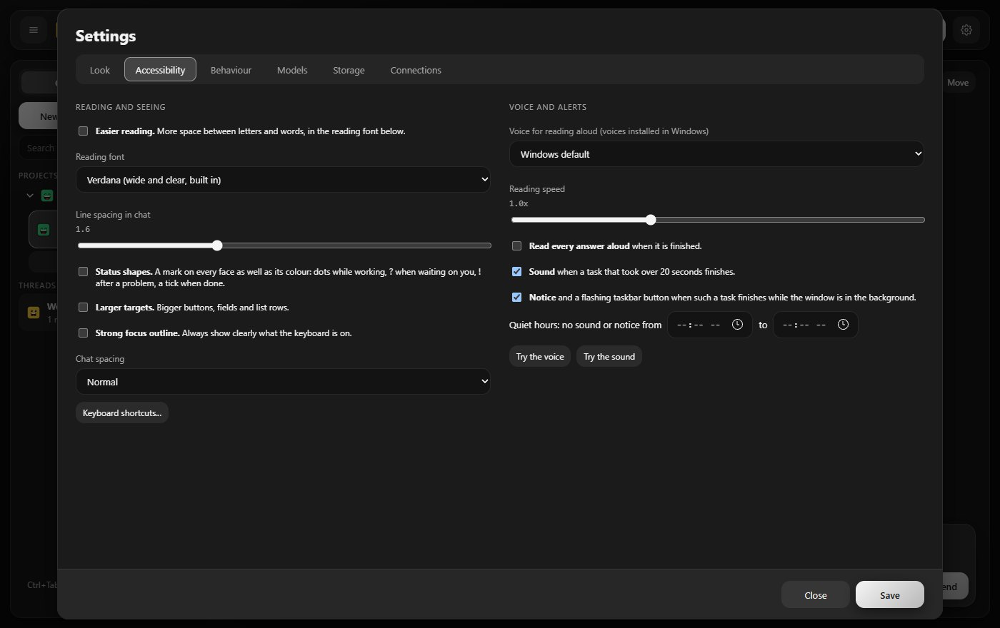

Take back control of AI.
Your assistant, on your PC.
Ramses is an AI assistant that lives on your own computer. It chats, works with your files, writes and runs code, searches the web and makes pictures, like the assistants you already know. The difference is who is in charge: it runs on your hardware, keeps your data with you, and does only as much on its own as you allow.

Helpful like the assistants you know. Owned by you.
Ramses is built around three simple ideas. None of them ask you to give anything up: you keep the convenience and gain the say.
It runs where you are
Ramses works on your own PC with models that run on your graphics card, and it keeps working offline. When a job needs more muscle, you can add an online model with your own key, from the provider you choose.
Your data stays yours
Chats, memory, boards and settings are stored on your computer as files you can read, edit, export or delete. Passwords and keys are kept in a local vault and are never sent anywhere, by design.
You set the pace
Choose how much it may do on its own, from asking before every step to simply getting on with it. It shows its plan before bigger jobs, and one key stops everything, instantly.
A capable assistant, shaped around your computer.
Fits your hardware, whatever it is
On first run, Ramses checks your graphics card, memory and space, then picks local models that suit your PC. It measures how fast each one really runs and suggests better ones when they would help. No suitable graphics card? It can work online-only with your own key.
- Separate picks for everyday chat, big jobs and pictures
- Steps aside while you play: frees your graphics card and resumes after
- Every choice can be changed in Settings

Does real work, with care
Ask a question or hand it a job. Ramses can work with files (backing them up first), PowerShell, git and Python, search the web, make pictures, run scheduled jobs, and connect to tool servers (MCP) and your own apps, with several tasks at once.
- Projects with their own threads, memory, guidelines and models
- Brainstorm boards: canvases, sticky notes, flows and task boards
- Search by meaning across your notes

Nothing hidden from you
The Context and usage window shows exactly what the model reads for each chat, how full its memory is, which models are loaded, and 30 days of use, including what any online model cost you. Nothing happens out of view.
- Memory is plain files you can read and edit
- Text in files and web pages is treated as information, never as orders
- A full accessibility set: reading font, larger targets, voice and more

Explore Ramses, one corner at a time.
Pick a topic. Each card is one thing Ramses does today, in plain words. The gold tags mark what 1.0.4 adds.
Ask, talk and get things done, in projects that remember what they are about.
Projects and threads
Each project keeps its own threads, memory, guidelines and models, so a recipe chat never bleeds into your tax folder.
Search everything
Ctrl+K finds any chat, file, board or setting in a keystroke.
Talk to it
Press Speak, or say "Hey Ramses". It can read answers aloud too.
Exact numbers
A built-in calculator gets sums, averages and big numbers exactly right, with nothing to approve.
Print or PDF
Print any answer or document, or save it as a PDF.
Learn as you go
Tutorials with Show me walkthroughs and ready-made project templates.
Point it at your stuff and it reads, sorts and finds things, carefully.
Reads almost any file New in 1.0.4
Documents, e-books, mail, Photoshop layers, media details, fonts, databases, programs and shortcuts. It even looks inside archives and disc images without unpacking them.
Careful with your files
It backs a file up before changing it and asks first, at the level of independence you chose.
Search by meaning
Find the note about "that cheap flight idea" even if you never wrote the word flight.
Memory you can read
What it remembers is plain files in your own folder. Read them, edit them or delete them.
Web and pictures
Search the web (only the search words are sent) and make pictures on your own PC.
Every font, no installs New in 1.0.4
Browse every installed font, plus a folder of fonts you pick, without installing any of them.
A coding partner that reads your project, runs your tools and respects your branches.
Runs real tools
PowerShell, Python and git, each behind a clear Allow or Decline card.
Knows your codebase
A code index maps every function, and /docs writes a README from the code itself.
/review and /security-review New in 1.0.4
Ask for a second pair of eyes on your changes, or a security pass on them.
Git and pull requests New in 1.0.4
Status, diff, log, branches, commits and worktrees. /pr opens a GitHub pull request, online and optional, and asks first.
Inside your editor New in 1.0.4
A VS Code extension, and external tools for JetBrains IDEs. Set them up in Settings, Code editors.
Extend it
Plugins in Python or JavaScript, and tool servers (MCP) for the apps you already use.
Hand off the long jobs. Ramses plans, delegates, checks and reports back.
A team of helpers New in 1.0.4
Research, worker, reviewer, security reviewer and tester agents, plus your own. Several run at once, and workers change git projects only on their own branch.
Adopt a program New in 1.0.4
/adopt studies a program and rebuilds what it does as a brand-new plugin, the clean-room way: one agent describes the behaviour, another writes fresh code from that description alone. Protected programs are only studied from the outside.
Finishes what it starts
A stuck job steps back, makes a fresh plan and tries again, and checks its work before saying done. You can reorder, edit or pause its steps while it runs.
Plan first, then Go
For multi-step work it shows the plan and waits for one "Go".
Scheduled jobs
Jobs that run on a timetable and report back when they are done.
Skills that learn your jobs
Skills load by themselves when they fit, a job you keep asking for can become a skill, and the pack gallery has more to share.
Built by someone who plays. Polite to your games, handy for single-player tinkering.
Steps aside while you play
Launch a game and Ramses frees your graphics card, then picks up where it left off.
A window beside the game
A compact window that sits next to a game without getting in the way.
Game collections New in 1.0.4
Survey a game drive, check downloads piece by piece, make torrents and repack to 7z, CHD or zip. The download client stays off until you turn it on.
Modding toolkit
Work out a data file's layout, find values and patch them, with a backup first.
Single-player analysis
Playbooks for looking inside single-player programs while they run.
Clear rails
It never helps get around anti-cheat, DRM or anti-tamper, and some tools wait until anti-cheat games are closed.
Name it, dress it, set its pace, and take it with you.
Name and style
Give it any name and colour. Choose Glass, Aurora, Bold, Neon, Terminal, Soft, Paper or Blueprint, or build a style of your own.
Five levels of independence
From asking before every step to just doing it and reporting back. Set it per chat.
Brainstorm boards, together New in 1.0.4
Canvases, sticky notes, flows and task boards. Several people, like your PC and a paired phone, can now edit one board at once and see changes live.
From your phone
Reach Ramses from your phone, from anywhere, behind a passcode. Off until you turn it on.
A tidier Settings New in 1.0.4
A side rail, a "Find a setting" box and roomier cards.
Accessible by default
Reading font, larger targets, status shapes, voice and more.
Local first. Online only when you say so, with your own key and a visible bill.
Picked for your PC
It checks your hardware, measures real speeds and picks models for everyday chat, big jobs and pictures.
Choose where each model runs New in 1.0.4
On the graphics card, split with RAM, or on the processor alone. Helpers can run on the processor beside the main model.
Online is opt-in New in 1.0.4
New installs start with online use off, and the first-run setup asks. Add your own key from the provider you choose.
A live cost meter
Online use is counted as you go, with an optional monthly limit.
See what it sees
The Context and usage window shows exactly what the model reads, how full its memory is and 30 days of use.
Your own helper model
Train a small helper model on your own PC. Optional, and off until you start it.
From first coffee to lights out.
Tap through an ordinary day to see how the pieces fit together. The conversations are examples, but every feature in them is real.
Coffee, and a briefing that wrote itself.
A scheduled job ran before you woke up. It read your project notes and the inbox you pointed it at, and left a short summary waiting in the chat.
What did I leave unfinished yesterday?
Three things: the budget sheet (two empty rows), the reply to Sam (drafted, not sent) and the board for the garden. Want me to open the budget first?
Yes, and fill the empty rows from the receipts folder.
Hand it the messy folder.
A zip of scans, a PDF, an e-book and an old mail export. Ramses reads inside the archive without unpacking it, pulls out the dates and totals, and asks before writing anything.
How much did we spend on the van this year?
Read 41 files inside receipts.zip
1,284.60 across 9 receipts, worked out exactly. The biggest was tyres in March. Shall I add a sheet to the budget?
A second pair of eyes on your code.
You ask for a review. A reviewer helper and a security helper read the change side by side, a worker fixes what they find on its own branch, and nothing touches GitHub until you say so.
/review my branch, then fix anything serious
Two findings: a missing null check and a path that isn't escaped. The worker fixed both on helper/fix-paths and the tests pass. Open a pull request?
Go.
Game time. It gets out of the way.
You launch a game and Ramses frees your graphics card, pauses the heavy jobs and shrinks to a compact window at the side. When you quit, it carries on where it stopped.
Game detected: heavy jobs paused, graphics card freed
What was that boss's weak point again?
Your notes from Sunday say fire, after the second phase. You also wrote "dodge left".
Plans from the couch.
On your phone, behind your passcode, you open the garden board that is also on the PC. You both move sticky notes and the changes merge note by note.
Hey Ramses, move "plant garlic" to this weekend
Done. It's on Saturday, next to buy compost. Sleep well.
Five levels of independence. You pick the one that fits.
Start cautious and loosen up as you get comfortable, or set it differently for each chat. Whatever you choose, Ramses asks for your OK with a simple card in the chat whenever it needs one.
A plan first
For multi-step work it can show you the plan and wait for a single “Go”.
A stop key
Ctrl+Alt+End stops every action and the model, from anywhere on your PC.
Rails you understand
Risky commands always ask, and it never helps get around anti-cheat, DRM or anti-tamper.
What stays on your PC.
Everything, unless you decide otherwise. Here is what that means in practice.
- Your chats
- Stored locally. They only reach an online model if you added a key and let that question go online.
- Your secrets
- Kept in an encrypted local vault and removed from anything that goes online. This one can’t be switched off.
- Your memory
- Plain files in your own folder. Read them, edit them, export them or delete them.
- Web search
- If you leave it on, only the search words are sent.
- Your spending
- Online use is shown in a live cost meter, with an optional monthly limit.
- Telemetry
- None. Ramses doesn’t send usage data back to anyone.
What’s new.
Ramses grows a team: helper agents, code review, a clean-room way to adopt programs, editor extensions and boards you edit together. Your chats, settings and memory carry over when you install it over an earlier version.
- Helper agents
- Research, worker, reviewer, security reviewer and tester agents, plus your own. Several run at once, and workers stay on their own git branch.
- Adopt a program
- /adopt rebuilds what a program does as a new plugin, clean-room: one agent describes it, another that never sees the program writes fresh code and tests it. DRM, anti-tamper and anti-cheat programs are only studied from the outside, and every stage resumes after a restart.
- Code review and git
- /review, /security-review, git tools with worktrees, and /pr for GitHub pull requests (online, optional, asks first).
- In your editor
- A VS Code extension and JetBrains external tools, under Settings, Code editors.
- Boards together
- The PC and a paired phone can edit one brainstorm board at once, merged note by note.
- Where models run
- Graphics card, split with RAM, or processor only, per model. Helpers can use the processor beside the main model.
- Almost any file
- Reads inside archives and disc images, plus documents, e-books, mail, Photoshop layers, fonts, databases, programs and more.
- Games and fonts
- Survey a game drive, check and make torrents, repack to 7z, CHD or zip (download client off by default). Browse fonts from any folder without installing them.
- Settings and safety
- A new Settings layout with a search box. Online use now starts off on new installs. Git no longer runs programs a downloaded repository sets up.
- Checked
- 428 automated tests, window, smoke and sandbox-escape checks, and a clean first boot from the package.
Earlier: version 1.0.3
- Finishes what it starts
- A stuck job looks back, makes a fresh plan and tries again. Before it says it is done, it checks its work. While it runs you can reorder, edit or pause its steps.
- Code, games and reverse engineering
- A code index maps every function in a project. A modding toolkit works out a data file’s layout, finds values and patches them with a backup. New playbooks cover live analysis of single-player programs.
- Learns your jobs
- Skills that fit a request load by themselves, and a job you keep asking for can become a skill of its own. /docs writes a project’s README from its code. Plugins add tools written in Python or JavaScript.
- Everyday
- Search everything with Ctrl+K, project templates, Tutorials with Show me walkthroughs, “Hey Ramses”, a compact window beside a game, scheduled jobs that report back, and a style you build yourself.
- Optional extras
- A pack gallery of shared skills, phone access from anywhere with a passcode, and a helper model you train on your own PC. All of them are off until you turn them on.
Up and running in a few minutes.
- Install OllamaFor local models, install Ollama (free). Without it, Ramses works with an online key.
- Download and installUnzip and run
Install Ramses.cmd. It installs for your account only, no administrator rights needed. If Windows warns about an unknown publisher, choose More info, then Run anyway. - Follow the setupIt explains each choice, checks your hardware and offers to download the models picked for your PC.
- Start askingTake the short tour, or skip it. Type in the box, drop in a file, or press Speak.
What will it be like on my PC?
Pick your graphics card’s memory. Ramses does this check for you on first run and picks models to match, so this is just a preview.
Works online, or slowly on the processor.
Ramses can run entirely online with your own key, or run a small model on the processor. That works, just slowly: on our test PC a small model wrote about 9 tokens a second on the processor, against about 100 on a graphics card.
A quick everyday model, fully offline.
A small everyday model fits on the card, so everyday chat is fast and fully offline. Big jobs can split a larger model with your RAM, or go online if you allow it.
Our test PC. Fast chat and a big coding model.
This is what Ramses is built and tested on. The everyday model runs on the card at about 100 tokens a second, and a 30B coding model split with RAM still manages about 39. Pictures and helpers fit around them.
Room for bigger models on the card.
More graphics memory means bigger models sit fully on the card, so big jobs stay fast and local, and helpers can run on the processor alongside. Ramses measures your card and picks for you.
Speeds were measured on one PC with a 12 GB card and 32 GB of RAM. Yours will differ; the bars are a rough guide, not a promise.
What you need.
System
Windows 10 or 11, 64-bit. Nothing else to install for the app itself: .NET is built in. Linux and macOS are planned.
Local models
Ollama (free). An NVIDIA graphics card with 8 GB or more works best; Ramses picks smaller models for smaller cards and works online-only without one.
Space
About 300 MB for the app. Models take 2 to 20 GB each, and the setup shows the total against your free space before downloading.
Good to know.
Is it really free?
Yes. Ramses is free and open source under the MIT licence, and local models are free too. If you add an online key, that provider charges you for what you use, and Ramses can stop at a monthly limit you set.
Is it as smart as the big online assistants?
Local models are very capable for everyday work, but the largest online models are still stronger at the hardest tasks. That’s why Ramses can hand a hard job to an online model with your own key, only when you allow it.
Does it send my chats anywhere?
Not unless you add an online key and let a question go online. New installs start with online use switched off. Everything else stays on your PC. Web search, if left on, sends only the search words. Passwords, keys and tokens are removed before anything goes online, always.
Which models does it use?
Any model from Ollama locally, and your choice of online provider. Ramses checks your hardware, picks the best one it has for each job, and suggests downloads that would do better. You can change every pick in Settings.
Can I rename it?
Yes. Give your assistant any name and colour theme in the setup or in Settings. The app, its window and its shortcuts can take that name too.
Windows warns about the installer
The app isn’t code-signed yet, so SmartScreen shows “unknown publisher” (More info, then Run anyway). You can check the download against the SHA-256 shown under the button.
Where is my data, and how do I remove it?
Everything lives in %LOCALAPPDATA%\Ramses\data: threads, memory, boards, settings and the encrypted key vault. Uninstall Ramses.cmd removes the app and keeps your data unless you delete that folder.
Is it finished?
Version 1.0 is out and in daily use, with a new update every few days. Phone access and voice are already in. Linux and macOS are next on the list.
What is “adopt”, and is it safe?
Adopt rebuilds what a program does as a new plugin without copying it: one agent only describes the behaviour, and a separate agent that never sees the program writes new code from that description. Programs protected by DRM, anti-tamper or anti-cheat are only studied from the outside, never unpacked or patched, and adopt won’t run while an anti-cheat game is open. New plugins ask before every use until you trust them.
Can several things run at once?
Yes. Helper agents can work side by side, and each worker changes a git project only on its own branch, so your main work is never touched without you.
An AI assistant that answers to you.
Free, open source and ready for Windows. Install it, try it at your own pace, and keep the controls in your hands.